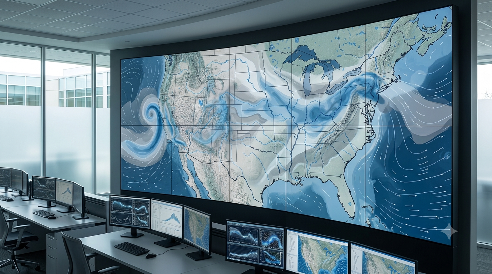

Услуги АО «НИИ Атмосфера»
Проект обновления страницы: услуги сохранены в привычной двухколоночной сетке, но сгруппированы по направлениям деятельности. Изображения заменены на новую единую серию карточек.
Научные исследования и моделирование
Научное сопровождение, расчетные методики, моделирование загрязнения атмосферного воздуха и оценка переноса загрязняющих веществ.

Оценка влияния предприятий на окружающую среду в контексте дальнего переноса загрязняющих веществЭкологическое проектирование и разрешительная документация
Подготовка проектной, разрешительной и нормативной документации для промышленных предприятий.

Лабораторные и измерительные услуги
Измерения, лабораторные исследования, методики и автоматизированный контроль выбросов.

Климатические проекты и парниковые газы
Оценка, инвентаризация, валидация и верификация выбросов парниковых газов.

Экологический контроль и аудит
Проверка экологических аспектов деятельности предприятий и исследование специфических факторов воздействия.
Экспертная и образовательная деятельность
Стандартизация, обучение специалистов и профильная научно-техническая литература.